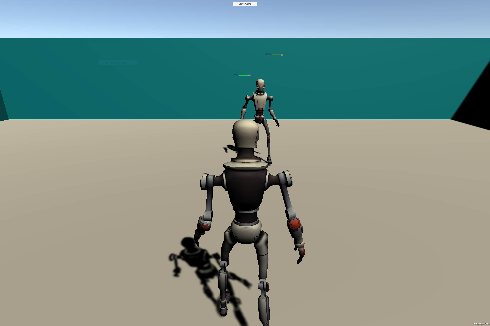
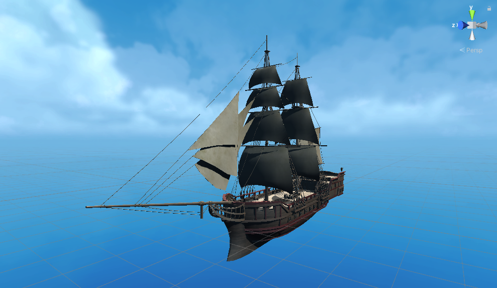

Learning the Ropes
This week, we split off to start researching and prototyping different aspects of the MVP for Hands on Deck, and at the same time familiarizing ourselves with Unity and developing on the Oculus Quest.
There were three main areas of the MVP that we experimented with this week: multiplayer, ship mechanics, and water physics. James and Julian teamed up to tackle multiplayer while Patrick helmed the ship and Abhinav dove into water.
Protohype (PUN Intended)
After doing some research on the options for multiplayer Quest development, we found Photon Unity Networking (PUN) 2 to be the most promising. It's been used by a variety of established developers and has the most documentation and tutorials. Unfortunately, the rapid changes to Quest development as a whole have made many tutorials out of date and inaccurate, which has made getting a working prototype challenging. In addition, once we found a tutorial we could follow we encountered a bug where one VR camera rig would steal the view for all players. Despite these roadblocks, we were able to pull together a scene where 2 people could run around and shoot lasers at each other. While this doesn't have anything to do with sailing, it is progress.
Ship-Shape
While we're excited to start acquiring and modeling assets for Hands on Deck, we first need to get an idea of how to properly set up imported assets in a project. Fortunately for testing, there are a number of free assets on the Unity Asset Store, so we selected a fitting colonial ship as the prototype. We set up a scene, rigged the ship with the proper physics components, and were able to get a player to move around on the deck in the Quest and bump into parts that should be bumped into. A good start then.
Go With the Flow
Since Hands on Deck users are going to be looking out at the seas for a sizeable portion of the experience, it is vital to make the water realistic and dynamic. However, we still want to maintain performance considering the Quest's graphical limitations, so we decided to go for a more simplistic but still lively take. We found a tutorial on how to create a water plane using the ShaderGraph and Lightweight Render Pipeline packages. After following it, we got this result:
The water has a convincingly natural movement and color, but there are a few downsides. The waves look a little "pointy" when the intensity is turned up, the ripples look a bit more swimming pool than high seas, and it doesn't seem like this method will scale to as large an environment as we're aiming for. So, next we'll try to find a more ocean-suitable method of simulating water.
- Work Log -
James and Julian: researched and prototyped multiplayer for Quest using PUN 2
Abhi: researched and tested methods of simulating water for the environment
Patrick: tested rigging physics to premade ship asset
- Work Plan -
Patrick and Abhi: acquire and rig final ship asset and add it to water environment. Figure out wind physics for waves and ship movement
James and Julian: work out the kinks with PUN2 networking and get a joinable lobby working, potentially in the environment Patrick and Abhi make.
Everyone: set up app for MVP in Oculus, set up repo for Unity project and sync up VC workflows